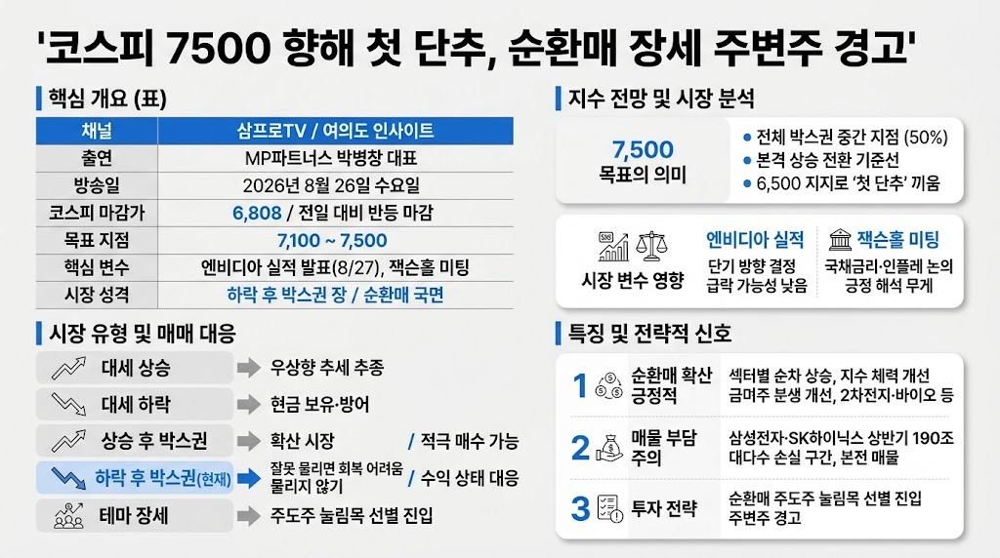

삼프로TV 3PROTVMORNING DIGEST · 2026-08-27 · 삼프로TV 3PROTV🎬 영상
코스피 7500 향해 첫 단추, 순환매 장세 주변주 경고

01핵심 개요 (표)
항목
내용
채널
삼프로TV 3PROTV (여의도 인사이트)
출연
MP파트너스 박병창 대표
방송일
2026년 8월 26일(수)
코스피 마감가
6,808 (전일 대비 반등 마감)
목표 지점
7,100~7,500 (중요 저항선 7,500)
핵심 변수
엔비디아 실적 발표(8/27), 잭슨홀 미팅
시장 성격
하락 후 박스권 장 — 순환매(확산 아님) 국면
삼성전자 소액주주
약 800만 명 (2021년 520만 명 대비 급증)
02핵심 기능/내용 구조
거래량 감소와 관망 심리: 증권가 강연에서도 거래 둔화가 화두이며, 고점에 물린 개인들이 오도가도 못하는 상태다. 기관은 서두르지 않고 시간을 두고 흐름을 보며 대응하는 반면 개인만 조급하다는 진단이다.
6,500 지지 확인과 추세 반전: 7월 29일 저점 확인 후 7월 31일 급등으로 바닥을 인정했고, 8월 11일부터 11일 이동평균선이 위로 반전(추세 반전)했다. 코스피는 여전히 7,500 중간선 아래 하단에 있어 약세 국면이지만 그 안에서 상승 추세가 진행 중이라는 분석이다.
7,500 목표의 의미: 7,500은 과거 저점 라인들이 모인 구간이자 전체 박스권의 중간(50%) 지점으로, 이 선을 넘어서야 본격적인 상승을 말할 수 있다. 6,500을 지켜냈기 때문에 7,500을 향한 "첫 단추"는 끼웠다는 평가다.
엔비디아 실적과 잭슨홀 변수: 엔비디아 실적 발표(8/27)와 컨퍼런스콜 내용에 따라 단기 방향이 갈릴 전망이나, 과거 빅테크들의 실적 발표 당일 급락 후 회복 패턴과 현재 엔비디아 주가가 고점 대비 이미 하락한 위치라는 점에서 추가 급락 가능성은 낮게 본다. 잭슨홀 미팅은 발표 없이 흘러나오는 논의 중심으로, 장기 국채금리·인플레이션 이슈가 다뤄질 것으로 예상하며 긍정적 해석에 무게를 둔다.
순환매 확산과 삼성전자·SK하이닉스 쏠림 완화: 예전에는 삼성전자·SK하이닉스로만 쏠려 다른 섹터가 죽는 구조였으나, 8월 들어 2차전지·바이오·핀테크·원전·반도체소부장 등이 순차적으로 두 자릿수 상승을 보이며 순환매가 뚜렷해졌다. 이는 삼성전자·SK하이닉스에 대한 쏠림 믿음이 약해진 결과이자, 지수가 이 두 종목에만 의존하는 "천수답" 구조에서 벗어나는 긍정적 신호로 해석된다 (13:37).
삼성전자·SK하이닉스 주주환원과 매물 부담: 이번 주주환원 발표(배당 확대 등) 이후 주가 반응이 기대에 못 미친 것은, 실적·펀더멘털 논리가 주가를 못 끌어올리자 대안으로 꺼낸 이슈라는 해석이다. 근본 원인은 올해 상반기 개인(140조)과 금융투자(53조) 합산 190조 순매수가 대부분 손실 구간에 있어, 주가가 오를 때마다 본전 매물이 쏟아지는 구조적 부담 때문이라는 분석이다.
03기술적 맥락
박병창 대표는 시장을 대세 상승·대세 하락·상승 후 박스·하락 후 박스·테마 장세의 다섯 가지로 구분하며, 현재는 "하락 후 박스권" 장으로 분류한다. 상승 후 박스권에서는 확산 시장(사서 물려도 결국 수익)이 나타나지만, 하락 후 박스권에서는 잘못 물리면 못 돌아설 수 있어 "물리지 않는 것"이 최우선 원칙이라고 설명한다. 매매 기법으로는 섹터 순환매에서 가장 강했던 1~2개 종목을 골라, 급등 후 거래량이 줄어드는 눌림목 구간에서 수급(기관·연기금 등 매수 주체가 계속 사들이는지)을 확인해 진입하는 방식을 제시한다(LG에너지솔루션·한국콜마 사례로 설명).
04전략적 의미
순환매 확산은 지수가 삼성전자·SK하이닉스 두 종목에만 의존하지 않고 다른 섹터가 시가총액을 받쳐주며 시장을 탄탄하게 만드는 긍정적 신호로 해석된다. 다만 삼성전자·SK하이닉스가 다시 쏠림을 일으킬 가능성이 완전히 사라진 것은 아니어서(쏠림 심리가 100에서 50 수준으로 약화됐을 뿐), 투자자들은 이를 견제하며 조심스럽게 순환매 섹터에서 매매하는 이중적 태도를 보인다. 지수가 한 단계 더 레벨업(7,500, 8,000)하려면 결국 삼성전자·SK하이닉스가 신고가를 뚫어야 하는데, 이는 상반기 손실 구간에 진입한 190조 규모의 매물 부담 때문에 시간이 걸릴 것으로 전망된다.
05핵심 워크플로우 또는 비교표
시장 유형
특징
매매 대응
대세 상승
지속적 우상향
추세 추종
대세 하락
지속적 하락
현금 보유·방어
상승 후 박스권
확산 시장, 사서 물려도 결국 수익
적극 매수 가능
하락 후 박스권 (현재)
잘못 물리면 회복 어려움
물리지 않기, 수익 난 상태에서만 대응
테마 장세
개별 테마 단기 급등락
주도주 눌림목만 선별 진입
06활용 시나리오
눌림목 매수 전략 실행: 순환매 섹터(2차전지·바이오·원전·화장품 등)에서 당일 가장 세게 오른 종목을 특정한 뒤, 다음 날 거래량이 줄며 조정받을 때 수급 데이터로 매수 주체 이탈 여부를 확인해 진입한다.
엔비디아 실적 발표 대응: 엔비디아가 급락할 경우 매수 대응 시점으로 보되, 시장이 약한 국면에서는 절대 주변주(시총 낮은 개별 테마주)를 사지 않고 주도주 중심으로 대응한다.
삼성전자·SK하이닉스 장기 보유자의 판단: 현재 매물 부담으로 단기 상승이 제한적이지만, 연내 기준으로는 현재가보다 높은 가격을 기대할 수 있다는 관점에서 보유를 유지하되 급등 시 매도 타이밍을 미리 계획해야 한다.
코스닥 투자 시 쏠림 리스크 관리: 코스닥 시가총액 상위(주성엔지니어링, 원익IPS, 리노공업, 이오테크닉스 등 반도체 소부장 4개 종목 편입)의 쏠림 구조를 인지하고, 특정 섹터 붕괴 시 지수 전체가 급락할 수 있는 "천수답" 리스크에 대비한다.